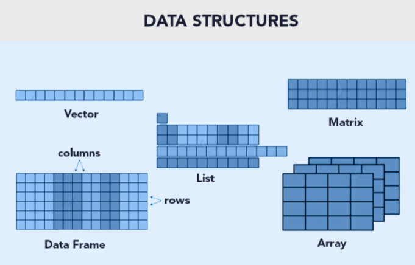

Código
identificador <- "gene_001"
longitud <- 450L
proporcion_gc <- 0.53
anotado <- TRUEUn objeto almacena un valor o una estructura que podremos reutilizar. Usaremos <- para asignar valores. Los nombres distinguen mayúsculas de minúsculas: gen y Gen son objetos distintos.
| Clases | Declaración de la variable | Conversión de formato |
|---|---|---|
numeric |
numeric() |
as.numeric() |
integer |
integer() |
as.integer() |
double |
double() |
as.double() |
character |
character() |
as.character() |
logical |
logical() |
as.logical() |
factor |
factor() |
as.factor() |
Si queremos saber la clase de la variable debemos usar class(), aunque tambien str() te dice esta información.
NOTA:
as.integer()convierte los numeros a enteros. Ejemplo: as.integer(2.5) = 2. En cambio,as.double()permite que los numeros contengan decimales.
identificador <- "gene_001"
longitud <- 450L
proporcion_gc <- 0.53
anotado <- TRUEclass(identificador)[1] "character"class(longitud)[1] "integer"class(proporcion_gc)[1] "numeric"class(anotado)[1] "logical"numeric se usa habitualmente para valores numéricos, aunque class(1.5) devuelve "numeric" y typeof(1.5) devuelve "double". Usa class(), typeof() y str() para inspeccionar objetos.
class(1.5)[1] "numeric"typeof(1.5)[1] "double"str(identificador) chr "gene_001"Las estructuras de datos son objetos que contienen datos. Cuando trabajamos con R, lo que estamos haciendo es manipular estas estructuras.

| Estructura | Dimensión | Homogeneidad | Ejemplo | Uso típico |
|---|---|---|---|---|
| Vector | 1D | Homogénea (todos del mismo tipo) | c(1,2,3) |
Secuencias simples de números, caracteres o lógicos |
| Lista | 1D | Heterogénea (puede mezclar tipos) | list(a=1:3, b="hola") |
Agrupar objetos distintos, resultados de modelos |
| Matriz | 2D | Homogénea | matrix(1:6, nrow=2) |
Cálculos numéricos, álgebra lineal |
| Array | nD (más de 2 dimensiones) | Homogénea | array(1:8, dim=c(2,2,2)) |
Datos multidimensionales, imágenes, series temporales |
| Data frame | 2D | Heterogénea (cada columna puede ser de distinto tipo) | data.frame(x=1:3, y=c("a","b","c")) |
Datos tabulares, análisis estadístico |
| Tibble | 2D | Heterogénea | tibble(x=1:3, y=c("a","b","c")) |
Variante moderna de data frame, impresión más clara |
Un vector atómico contiene elementos del mismo tipo. Se construye con c() y se indexa mediante corchetes. R comienza a contar posiciones desde 1, no desde 0.
genes <- c("gA", "gB", "gC", "gD")
longitudes <- c(150, 400, 220, 510)
length(genes)[1] 4genes[1][1] "gA"genes[c(2, 4)][1] "gB" "gD"genes[longitudes >= 300][1] "gB" "gD"Las operaciones vectorizadas se aplican a varios elementos sin escribir un ciclo explícito:
longitudes / 3[1] 50.00000 133.33333 73.33333 170.00000longitudes >= 300[1] FALSE TRUE FALSE TRUEsum(longitudes >= 300)[1] 2NA representa un valor faltante. Una conversión puede introducir NA si el texto no se puede interpretar como número; nunca supongas que la conversión fue correcta sin revisarla.
valores <- c("12", "18", "sin_dato")
# La conversión produce una advertencia; no la ejecutamos automáticamente
# as.numeric(valores)O podemos preguntar directamente si hay valores faltantes en un vector.
is.na(c(10, NA, 20))[1] FALSE TRUE FALSEUna matriz tiene dos dimensiones y almacena elementos del mismo tipo. Un arreglo (array) generaliza esta idea a más dimensiones.
conteos <- matrix(
c(12, 8, 4, 6, 10, 2),
nrow = 3,
dimnames = list(c("g1", "g2", "g3"), c("M1", "M2"))
)
conteos M1 M2
g1 12 6
g2 8 10
g3 4 2conteos[2, 1][1] 8conteos[, "M2"]g1 g2 g3
6 10 2 dim(conteos)[1] 3 2arreglo <- array(1:8, dim = c(2, 2, 2))
dim(arreglo)[1] 2 2 2Un data frame es una tabla: cada columna puede tener un tipo diferente, pero todas deben tener la misma cantidad de filas.
anotaciones <- data.frame(
gen = c("g1", "g2", "g3"),
longitud = c(450, 120, 800),
producto = c("transportador", "hipotetica", "enzima")
)
anotaciones gen longitud producto
1 g1 450 transportador
2 g2 120 hipotetica
3 g3 800 enzimastr(anotaciones)'data.frame': 3 obs. of 3 variables:
$ gen : chr "g1" "g2" "g3"
$ longitud: num 450 120 800
$ producto: chr "transportador" "hipotetica" "enzima"anotaciones$longitud[1] 450 120 800anotaciones[2, ] gen longitud producto
2 g2 120 hipoteticaanotaciones[anotaciones$longitud > 200, ] gen longitud producto
1 g1 450 transportador
3 g3 800 enzimaUn tibble es una variante moderna de data.frame, con una impresión más compacta y comportamientos de selección más consistentes.
# Requiere haber instalado tibble
# tibble::as_tibble(anotaciones)Las listas pueden almacenar objetos de distintos tipos y tamaños. Resultan útiles para reunir resultados de un análisis.
muestra <- list(
id = "M01",
secuencias = c("ATGCGT", "CCATGA"),
anotaciones = anotaciones
)
muestra$id[1] "M01"muestra[["secuencias"]] #Extraer la lista, es un vector [1] "ATGCGT" "CCATGA"muestra["secuencias"] # Conserva la estructura de una lista$secuencias
[1] "ATGCGT" "CCATGA"Un factor representa categorías con niveles definidos. Su orden puede importar al crear tablas o gráficos.
condicion <- factor(c("control", "tratamiento", "control"),
levels = c("control", "tratamiento"))
levels(condicion)[1] "control" "tratamiento"| Estructura | Dimensiones | ¿Elementos del mismo tipo? | Ejemplo de uso |
|---|---|---|---|
| Vector | 1 | Sí | Identificadores o longitudes |
| Matriz | 2 | Sí | Conteos por gen y muestra |
| Array | 2 o más | Sí | Datos multidimensionales |
| Data frame / tibble | 2 | Por columna | Tabla de anotaciones |
| Lista | Variable | No | Resultados heterogéneos |
| Aritméticos | Comparación | Argumentos lógicos (Logical Operators) |
|---|---|---|
+ Adición / suma |
< Menor que |
!x - Not x (logical NOT) |
- Sustracción / resta |
> Mayor que |
x & y OR x AND y - (logical AND) |
* Multiplicación |
<= Menor o igual que |
x && y - identico |
/ OR %% División |
>= Mayor o igual que |
xor(x,y) Funcion OR |
^ OR ** Exponencial |
== Igual a |
%in% pertenece a |
%/% División integral |
!= Diferente de |
Otra forma de escribir OR es x | y OR x || y.
En R, al igual que en matemáticas, las operaciones tienen un orden de evaluación definido.
Cuanto tenemos varias operaciones ocurriendo al mismo tiempo, en realidad, algunas de ellas son realizadas antes que otras y el resultado de ellas dependerá de este orden.
| Orden | Operadores |
|---|---|
| 1 | ^ |
| 2 | * / |
| 3 | + - |
| 4 | < > <= >= == != |
| 5 | ! |
| 6 | & |
| 7 | OR |